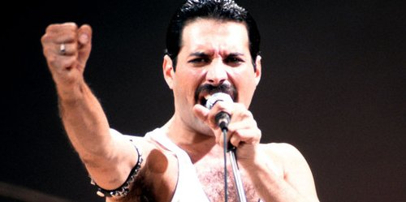

Freddie Mercury (5 September 1946 – 24 November 1991) was a British singer, songwriter and producer, best known as the lead vocalist and songwriter of the rock band Queen. As a performer, he was known for his flamboyant stage persona and powerful vocals over a four-octave range. As a songwriter, he composed many hits for Queen, including "Bohemian Rhapsody," "Killer Queen," "Somebody to Love," "Don't Stop Me Now," "Crazy Little Thing Called Love," and "We Are the Champions." Mercury also led a solo career, and also occasionally served as a producer and guest musician (piano or vocals) for other artists.
Although Mercury's speaking voice naturally fell in the baritone range, he delivered most songs in the tenor range.His vocal range extended from bass low F (F2) to soprano high F (F6). He could belt up to tenor high F (F5). Biographer David Bret described his voice as "escalating within a few bars from a deep, throaty rock-growl to tender, vibrant tenor, then on to a high-pitched, perfect coloratura, pure and crystalline in the upper reaches." Spanish soprano Montserrat Caballé, with whom Mercury recorded an album, expressed her opinion that "the difference between Freddie and almost all the other rock stars was that he was selling the voice." She adds,
In October 1986 the British press reported that Mercury had his blood tested for HIV/AIDS at a Harley Street clinic. A reporter for The Sun, Hugh Whittow, questioned Mercury about the story at Heathrow Airport as he was returning from a trip to Japan. Mercury denied he had a sexually transmitted disease. According to his partner Jim Hutton, Mercury was diagnosed with AIDS shortly after Easter of 1987. Around that time, Mercury claimed in an interview to have tested negative for HIV.[30] Despite the denials, the British press pursued the rampant rumours over the next few years, fuelled by Mercury's increasingly gaunt appearance, Queen's absence from touring and reports from former lovers to various tabloid journals – by 1990 the rumours about Mercury's health were rife. At the 1990 Brit Awards held at the Dominion Theatre, London, on 18 February, a visibly frail Mercury made his final public appearance on stage when he joined the rest of Queen to collect the Brit Award for Outstanding Contribution to Music. Towards the end of his life, he was routinely stalked by photographers, while The Sun featured a series of articles claiming that he was ill; notably in an article from November 1990 that featured an image of a haggard-looking Mercury on the front page accompanied by the headline, "It's official – Freddie is seriously ill."
Mercury was noted for his live performances, which were often delivered to stadium audiences around the world. He displayed a highly theatrical style that often evoked a great deal of participation from the crowd. A writer for The Spectator described him as "a performer out to tease, shock and ultimately charm his audience with various extravagant versions of himself." David Bowie, who performed at the Freddie Mercury Tribute Concert and recorded the song "Under Pressure" with Queen, praised Mercury's performance style, saying: "Of all the more theatrical rock performers, Freddie took it further than the rest... he took it over the edge. And of course, I always admired a man who wears tights. I only saw him in concert once and as they say, he was definitely a man who could hold an audience in the palm of his hand." Queen guitarist Brian May wrote that Mercury could make "the last person at the back of the furthest stand in a stadium feel that he was connected."[ One of Mercury's most notable performances with Queen took place at Live Aid in 1985, during which the entire stadium audience of 72,000 people clapped, sang and swayed in unison. Queen's performance at the event has since been voted by a group of music executives as the greatest live performance in the history of rock music. The results were aired on a television program called "The World's Greatest Gigs".In reviewing Live Aid in 2005, one critic wrote, "Those who compile lists of Great Rock Frontmen and award the top spots to Mick Jagger, Robert Plant, etc all are guilty of a terrible oversight. Freddie, as evidenced by his Dionysian Live Aid performance, was easily the most godlike of them all.
A statue in Montreux, Switzerland, by sculptor Irena Sedlecka, was erected as a tribute to Mercury.It stands almost 10 feet (3 metres) high overlooking Lake Geneva and was unveiled on 25 November 1996 by Mercury's father and Montserrat Caballé, with bandmates Brian May and Roger Taylor also in attendance. Beginning in 2003 fans from around the world have gathered in Switzerland annually to pay tribute to the singer as part of the "Freddie Mercury Montreux Memorial Day" on the first weekend of September. The Bearpark And Esh Colliery Band played at the Freddie Mercury statue on 1 June 2010.[ In 1997 the three remaining members of Queen released "No-One but You (Only the Good Die Young)," a song dedicated to Mercury and all those that die too soon. In 1999 a Royal Mail stamp with an image of Mercury on stage was issued in his honour as part of the UK postal service's Millennium Stamp series. In 2009 a plaque was unveiled in Feltham, where Mercury and his family moved upon arriving in England in 1964. The star in memory of Mercury's achievements was unveiled on Feltham High Street by his mother Jer Bulsara and Queen bandmate Brian May. A tribute to Queen was on display at the Fremont Street Experience in downtown Las Vegas throughout 2009 on its video canopy. In December 2009 a large model of Mercury wearing tartan was put on display in Edinburgh as publicity for the run of We Will Rock You at the Playhouse Theatre.